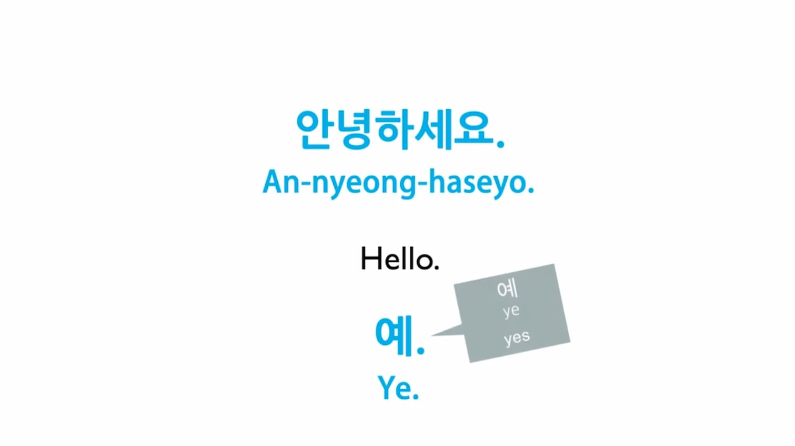
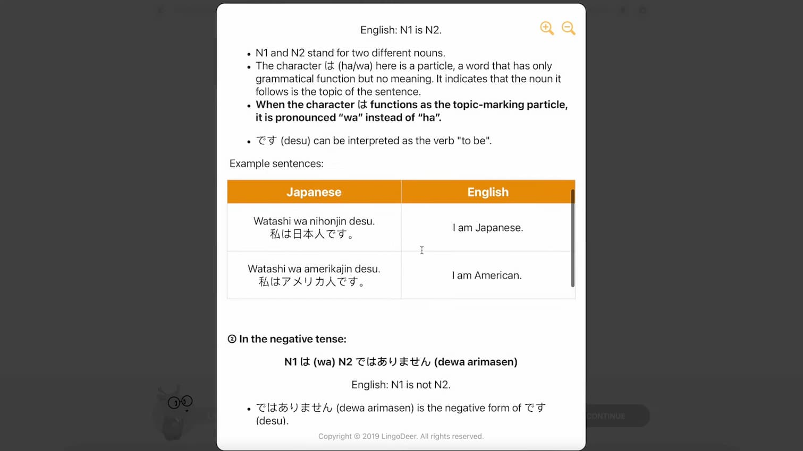

Website dan aplikasi belajar bahasa korea gratis untuk pemula
rosari j
10 min read
Dalam era globalisasi dan meningkatnya popularitas budaya Korea, kemampuan berbahasa Korea telah menjadi aset yang semakin berharga. Baik Anda tertarik karena K-pop, K-drama, atau peluang bisnis dengan Korea Selatan, mempelajari bahasa Korea dapat membuka pintu ke dunia baru yang menarik. Artikel ini akan membahas secara mendalam berbagai sumber daya online gratis untuk belajar bahasa Korea, serta memberikan strategi efektif bagi pemula yang ingin menguasai bahasa ini.
Mengapa Belajar Bahasa Korea?
Sebelum kita mendalami metode dan sumber belajar, mari kita eksplorasi lebih lanjut mengapa belajar bahasa Korea bisa menjadi pilihan yang bijak:
Memahami Budaya Korea Lebih Dalam
Memahami budaya Korea secara mendalam melibatkan apresiasi yang lebih mendalam terhadap K-pop, K-drama, dan film Korea, yang telah menjadi jendela utama dunia untuk mengenal Korea. Ini juga mencakup pemahaman yang lebih baik tentang sejarah dan tradisi Korea, yang kaya dengan cerita dan praktik yang membentuk identitas bangsa. Selain itu, kemampuan menikmati literatur Korea dalam bahasa aslinya memberikan nuansa dan emosi yang lebih autentik dari karya sastra, memungkinkan kita merasakan pemikiran, perasaan, dan pengalaman masyarakat Korea secara lebih mendalam.
Apresiasi mendalam terhadap K-pop, K-drama, dan film Korea
Pemahaman lebih baik tentang sejarah dan tradisi Korea
Kemampuan menikmati literatur Korea dalam bahasa aslinya
Peluang Karir yang Luas
Peluang karir yang luas tersedia dengan bekerja di perusahaan Korea besar yang beroperasi di Indonesia seperti Samsung, LG, dan Hyundai, menawarkan pengalaman berharga di lingkungan internasional. Selain itu, karir sebagai penerjemah atau interpreter sangat menjanjikan dengan meningkatnya interaksi bisnis dan budaya antara Korea dan Indonesia. Ada juga kesempatan untuk mengajar bahasa Indonesia di Korea Selatan, seiring dengan meningkatnya minat terhadap bahasa dan budaya Indonesia di sana. Di industri pariwisata dan perhotelan, terdapat peluang besar untuk melayani turis Korea, dengan karir sebagai pemandu wisata, manajemen hotel, dan layanan pelanggan. Memanfaatkan peluang ini memungkinkan kita membangun jaringan profesional yang kuat dan memperkuat hubungan antara kedua negara.
Prospek kerja di perusahaan Korea di Indonesia (Samsung, LG, Hyundai, dll.)
Peluang bekerja sebagai penerjemah atau interpreter
Kesempatan mengajar bahasa Indonesia di Korea Selatan
Karir di industri pariwisata dan perhotelan yang melayani turis Korea
Manfaat untuk Pariwisata
Kemampuan berkomunikasi dalam bahasa Korea memberikan kemudahan saat berwisata ke Korea Selatan, memungkinkan pengalaman budaya yang lebih otentik dan mendalam. Ini juga memungkinkan wisatawan untuk membaca tanda dan menu dalam bahasa Korea, meningkatkan kemampuan untuk menjelajahi destinasi, mencicipi makanan lokal, dan merencanakan perjalanan dengan lebih efisien. Memanfaatkan kemampuan bahasa ini tidak hanya meningkatkan pengalaman pribadi, tetapi juga memperkuat hubungan budaya antara Indonesia dan Korea Selatan.
Kemudahan berkomunikasi saat berwisata ke Korea Selatan
Pengalaman budaya yang lebih otentik dan mendalam
Kemampuan membaca tanda dan menu dalam bahasa Korea
Pengembangan Diri dan Kognitif
Melalui aktivitas yang merangsang kognisi seperti belajar bahasa baru atau memainkan permainan teka-teki, seseorang dapat meningkatkan kemampuan multitasking dan keterampilan pemecahan masalah. Ini juga membantu dalam melambatkan penurunan fungsi kognitif seiring bertambahnya usia dengan menjaga otak tetap aktif melalui aktivitas seperti membaca dan menulis. Selain itu, terlibat dalam kegiatan yang mendorong berpikir kreatif seperti menulis atau memecahkan masalah kompleks dapat mengembangkan kemampuan berpikir kreatif, membuka ruang untuk ide-ide baru dan solusi inovatif. Pengembangan diri dan kognitif ini tidak hanya meningkatkan produktivitas tetapi juga menjaga kesehatan otak dan memperluas kemampuan berpikir dalam berbagai aspek kehidupan.
Peningkatan kemampuan multitasking dan pemecahan masalah
Perlambatan penurunan fungsi kognitif seiring bertambahnya usia
Peningkatan kemampuan berpikir kreatif
Keunggulan Kompetitif dalam Bisnis
Memiliki pemahaman mendalam tentang bahasa dan budaya Korea tidak hanya memfasilitasi negosiasi bisnis dengan mitra dari Korea, tetapi juga meningkatkan kemampuan untuk beradaptasi dengan etika bisnis yang berbeda seperti hierarki yang kuat dan penghargaan terhadap senioritas. Ini memungkinkan perusahaan untuk membangun hubungan yang lebih baik dengan kolega dan mitra bisnis Korea, meningkatkan efektivitas kerja tim lintas budaya, dan membuka peluang untuk kolaborasi yang sukses dalam pasar global.
Memfasilitasi negosiasi bisnis dengan mitra Korea
Pemahaman lebih baik tentang etika bisnis dan budaya kerja Korea
Dasar-dasar Bahasa Korea untuk Pemula

Sebelum mulai menggunakan aplikasi atau website belajar, penting untuk memahami beberapa konsep dasar bahasa Korea:
Hangul (한글): Sistem Penulisan Korea
Hangul adalah sistem penulisan alfabet yang digunakan dalam bahasa Korea. Diciptakan oleh Raja Sejong Agung pada abad ke-15, Hangul dirancang untuk menjadi mudah dipelajari dan digunakan oleh semua lapisan masyarakat. Dengan 14 konsonan dasar dan 10 vokal dasar, kombinasi dari karakter-karakter ini membentuk suku kata yang membangun kata-kata dalam bahasa Korea. Hangul bukan hanya alat komunikasi, tetapi juga simbol identitas dan kebanggaan budaya Korea.
Sejarah singkat Hangul yang diciptakan oleh Raja Sejong pada abad ke-15
Cara menggabungkan konsonan dan vokal untuk membentuk suku kata
Tata Bahasa Korea Dasar
Tata bahasa Korea dasar meliputi struktur kalimat Subjek-Objek-Kata Kerja (SOV), penggunaan partikel untuk menunjukkan fungsi kata dalam kalimat, dan sistem konjugasi kata kerja yang kompleks.
Struktur kalimat Subjek-Objek-Kata Kerja (SOV)
Penggunaan partikel untuk menunjukkan fungsi kata dalam kalimat
Sistem konjugasi kata kerja yang kompleks
Tingkat Kesopanan dalam Bahasa Korea
Bahasa Korea memiliki berbagai tingkat kesopanan: bahasa informal (반말 - banmal) untuk teman dekat dan orang yang lebih muda, bahasa sopan kasual (해요체 - haeyo-che) untuk percakapan sehari-hari dengan orang yang tidak terlalu dekat, dan bahasa formal sopan (합쇼체 - hapsyo-che) untuk situasi resmi dan orang yang lebih tua atau atasan. Memahami konteks sosial sangat penting untuk menggunakan tingkat kesopanan yang tepat.
Bahasa informal (반말 - banmal)
Bahasa sopan kasual (해요체 - haeyo-che)
Bahasa formal sopan (합쇼체 - hapsyo-che)
Pentingnya memahami konteks sosial dalam penggunaan tingkat kesopanan
Pelafalan Bahasa Korea
Pelafalan bahasa Korea melibatkan perbedaan antara konsonan aspirated, tense, dan lenis; aturan perubahan bunyi (sound change rules) yang mengubah pengucapan huruf dalam konteks tertentu; serta pentingnya intonasi dalam mempengaruhi makna kalimat dan mengekspresikan emosi. Memahami elemen-elemen ini membantu menguasai pelafalan bahasa Korea dengan lebih baik.
Perbedaan antara konsonan aspirated, tense, dan lenis
Konsonan yang diucapkan dengan semburan udara yang kuat, seperti “ㅋ” (k), “ㅌ” (t), “ㅍ” (p), dan “ㅊ” (ch),Konsonan yang diucapkan dengan ketegangan lebih tinggi di pita suara, seperti “ㄲ” (kk), “ㄸ” (tt), “ㅃ” (pp), dan “ㅉ” (jj),Konsonan yang diucapkan dengan lebih lembut dan tanpa semburan udara kuat, seperti “ㄱ” (g/k), “ㄷ” (d/t), “ㅂ” (b/p), dan “ㅈ” (j).
Aturan perubahan bunyi (sound change rules)
Bahasa Korea memiliki aturan perubahan bunyi yang mengubah cara pengucapan huruf dalam konteks tertentu. Misalnya, “ㅎ” (h) dapat mengubah pengucapan konsonan lain menjadi lebih keras, dan konsonan akhir dalam satu suku kata bisa mempengaruhi pengucapan konsonan awal suku kata berikutnya.
Pentingnya intonasi dalam bahasa Korea
Intonasi sangat penting dalam bahasa Korea karena dapat mempengaruhi makna kalimat. Misalnya, intonasi yang berbeda dapat membedakan antara pernyataan dan pertanyaan. Intonasi yang tepat juga membantu dalam mengekspresikan emosi dan memastikan pesan diterima dengan benar.
Website dan Aplikasi Gratis untuk Belajar Bahasa Korea
Berikut adalah daftar lengkap sumber daya online terbaik untuk belajar bahasa Korea secara gratis, beserta fitur-fitur unggulannya:
Duolingo
Kursus interaktif dengan gamifikasi
Latihan menulis, membaca, mendengar, dan berbicara
Fitur leaderboard untuk meningkatkan motivasi
Talk To Me In Korean (TTMIK)
Pelajaran audio, video, dan teks untuk semua level
Penjelasan tata bahasa yang mudah dipahami
Konten budaya Korea untuk memperkaya pembelajaran
LingoDeer

Fokus pada bahasa Asia, termasuk Korea
Pendekatan sistematis dengan penjelasan tata bahasa yang rinci
Fitur pengucapan dengan teknologi speech recognition
Sejong Hakdang
Kursus online resmi dari pemerintah Korea Selatan
Materi pembelajaran yang komprehensif dan terstruktur
Sertifikat resmi setelah menyelesaikan kursus
KoreanClass101
Ribuan video dan podcast pembelajaran
Fitur kosakata harian dan frasa mingguan
Alat belajar seperti flashcard dan kuis
Memrise
Metode pembelajaran berbasis kartu flash dengan gamifikasi
User-generated content untuk variasi materi belajar
Fitur “Learn with Locals” untuk mendengar pengucapan asli
TOPIK Guide
Fokus pada persiapan Test of Proficiency in Korean (TOPIK)
Kumpulan soal-soal latihan TOPIK
Tips dan strategi untuk menghadapi ujian TOPIK
How to Study Korean
Pelajaran tata bahasa yang sangat detail
Penjelasan mendalam tentang nuansa bahasa Korea
Latihan dan kuis untuk setiap pelajaran
Naver Dictionary
Kamus Korea-Inggris yang komprehensif
Contoh penggunaan kata dalam kalimat
Fitur pencarian tulisan tangan untuk karakter Hangul
Anki
Sistem repetisi terjadwal (SRS) untuk mengingat kosakata
Kemampuan membuat deck kartu flash sendiri
Sinkronisasi lintas perangkat
Strategi Efektif Belajar Bahasa Korea untuk Pemula
Mulai dengan Menguasai Hangul
Gunakan mnemonic untuk mengingat bentuk dan bunyi huruf
Praktikkan menulis Hangul setiap hari
Gunakan aplikasi seperti “Write It! Korean” untuk latihan menulis
Bangun Fondasi Kosakata
Mulai dengan 1000 kata paling umum dalam bahasa Korea
Gunakan metode Spaced Repetition System (SRS) dengan Anki atau Memrise
Buat flashcard fisik atau digital untuk review rutin
Immerse Diri dalam Bahasa Korea
Dengarkan musik K-pop dan analisis liriknya
Tonton drama Korea dengan subtitle bahasa Korea
Ubah pengaturan bahasa ponsel dan aplikasi ke bahasa Korea
Praktikkan Percakapan Secara Teratur
Gunakan aplikasi language exchange seperti HelloTalk atau Tandem
Cari language partner untuk praktik berbicara mingguan
Rekam diri sendiri berbicara dan dengarkan untuk perbaikan
Manfaatkan Multimedia untuk Belajar
Ikuti channel YouTube pembelajaran bahasa Korea
Dengarkan podcast bahasa Korea untuk pemula
Gunakan aplikasi seperti Viki untuk menonton video dengan subtitle interaktif
Ikuti Struktur Belajar yang Sistematis
Mulai dengan kursus dasar seperti di Sejong Hakdang atau TTMIK
Set target mingguan dan bulanan yang realistis
Gunakan jurnal belajar untuk melacak kemajuan
Pelajari Aspek Budaya Korea
Baca artikel tentang etiket dan kebiasaan Korea
Pelajari peribahasa dan ungkapan idiomatik Korea
Ikuti berita dan acara terkini Korea untuk konteks bahasa
Gunakan Teknik Mnemonic untuk Tata Bahasa
Ciptakan cerita atau gambar untuk mengingat aturan tata bahasa
Gunakan akronim untuk mengingat pola kalimat
Praktikkan pola tata bahasa dengan menulis diary harian dalam bahasa Korea
Bergabung dengan Komunitas Belajar
Ikuti forum online seperti r/Korean di Reddit
Bergabung dengan grup belajar lokal atau virtual
Ikuti seminar atau webinar bahasa Korea
Persiapkan Diri untuk Sertifikasi
Targetkan untuk mengambil TOPIK (Test of Proficiency in Korean)
Gunakan materi persiapan TOPIK untuk struktur belajar
Ikuti simulasi tes TOPIK secara rutin
Tantangan Umum dan Cara Mengatasinya
Kesulitan dengan Pelafalan
Gunakan aplikasi pengucapan seperti “Forvo” atau “Korean Pronunciation Guide”
Tonton video YouTube yang fokus pada pelafalan Korea
Rekam dan bandingkan pengucapan Anda dengan penutur asli
Kebingungan dengan Tingkat Kesopanan
Mulai dengan fokus pada satu tingkat (misalnya 해요체) sebelum mempelajari yang lain
Praktikkan penggunaan berbagai tingkat kesopanan dalam konteks berbeda
Tonton drama Korea dan perhatikan penggunaan tingkat kesopanan dalam berbagai situasi
Kesulitan Mengingat Kosakata
Gunakan teknik asosiasi dan visualisasi
Buat kalimat dengan kata baru untuk konteks
Kelompokkan kata berdasarkan tema atau situasi
Struggle dengan Tata Bahasa Kompleks
Pecah aturan tata bahasa menjadi bagian-bagian kecil yang mudah dicerna
Fokus pada satu pola tata bahasa per minggu dan praktikkan secara intensif
Gunakan buku tata bahasa Korea yang komprehensif sebagai referensi
Kurangnya Motivasi atau Konsistensi
Set tujuan jangka pendek dan jangka panjang yang realistis
Gunakan aplikasi pelacak kebiasaan untuk memantau konsistensi belajar
Cari teman belajar atau mentor untuk akuntabilitas
Mengukur Kemajuan Belajar
Lakukan Tes Level Secara Berkala
Gunakan tes penempatan di berbagai aplikasi belajar
Ikuti mock test TOPIK setiap beberapa bulan
Evaluasi kemampuan Anda dalam membaca, menulis, mendengar, dan berbicara
Tantang Diri dengan Konten Asli
Coba baca artikel berita Korea tanpa terjemahan
Dengarkan podcast Korea tanpa subtitle
Tonton film Korea tanpa subtitle dan ukur pemahaman Anda
Praktik Menulis dan Berbicara
Mulai menulis blog atau jurnal dalam bahasa Korea
Rekam diri berbicara bahasa Korea dan minta feedback dari penutur asli
Ikuti kontes menulis atau speaking contest bahasa Korea
Kesimpulan
Belajar bahasa Korea adalah perjalanan yang menantang namun sangat bermanfaat. Dengan memanfaatkan berbagai sumber daya online gratis yang tersedia dan mengikuti strategi belajar yang efektif, Anda dapat mencapai kemahiran dalam bahasa Korea tanpa harus mengeluarkan biaya besar.
Ingatlah bahwa kunci kesuksesan dalam belajar bahasa adalah konsistensi, kesabaran, dan ketekunan. Jangan ragu untuk mencoba berbagai metode dan sumber belajar hingga Anda menemukan yang paling sesuai dengan gaya belajar Anda.
Mulailah perjalanan Anda dalam mempelajari bahasa Korea hari ini, dan nikmati proses membuka pintu ke dunia baru yang penuh dengan budaya yang kaya, peluang karir yang menarik, dan koneksi global yang berharga. 화이팅! (Hwaiting! - Semangat!)